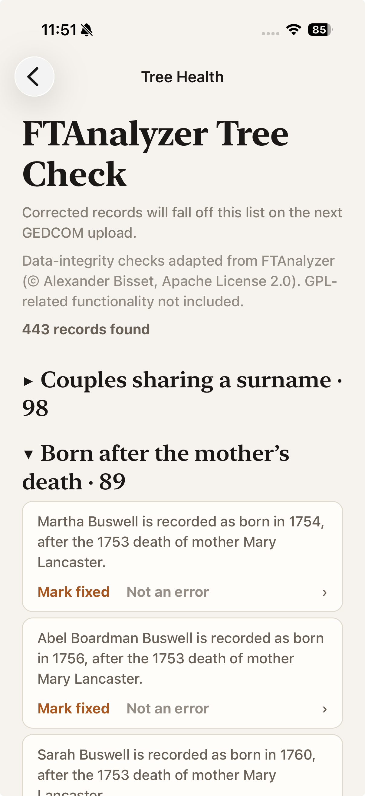
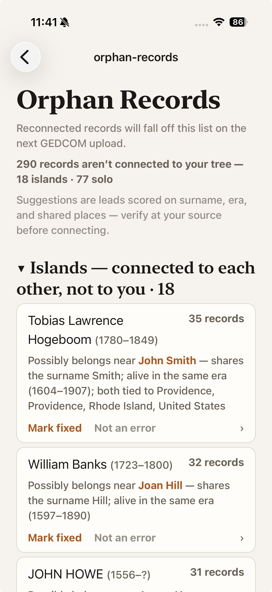

Twenty-two forensic checks run over every person, family, and date in the file — children born after a mother’s death, marriages before birth, impossible ages, dates that contradict each other. The findings are about the record, not about you: every serious tree accumulates them, and working the list down is how a large tree becomes a trustworthy one.
Also seen as: one curiosity a week files into the front page of this week’s issue, and each person’s page shows the open findings that name them. A decision made here retires the finding everywhere at once.
How you get here: Tree tab → the FTAnalyzer Tree Check card — or the curiosities nudge on Home. The check examines the entire tree, independent of your featuring scope: a bad date on an in-law is still a defect in the file.

1 2 3 4 5The Tree Check’s sibling, also on the Tree tab: the people your family graph cannot reach from you. Islands are groups connected to each other but not to the tree; solo records stand entirely alone. Both usually mean a linking marriage or parent link went missing in the source file.

1 2 3The checks are adapted from FTAnalyzer, the genealogy community’s standard data-integrity tool (© Alexander Bisset, Apache License 2.0) — the same catalog serious desktop researchers run, here with every finding one tap from the person it concerns.